Original files For 3d Printing
Week 6 : Assignment
- design and 3D print an object (small, few cm3, limited by printer time) that could not be made subtractively
- 3D scan an object
In week 6 we are introduced to 3D Printing and Scanning. we get to know about Addictive manufacturing process in which whole product or components are made by adding the material (by layer by layer or solidifying material).
Manufacturing process :
Manufacturing processes are divided in three primary division's,- Addictive manufacturing
- Substractive manufacturing
- By forming the material
Additive Manufacturing (AM)
Additive Manufacturing (AM) is an appropriate name to describe the technologies that build 3D objects by adding layer-upon-layer of material, whether the material is plastic, metal, concrete or one day…..human tissue.
AM
application is limitless. Early use of AM in the form of Rapid Prototyping focused on preproduction visualization models. More recently, AM is being used to fabricate end-use products in aircraft, dental restorations, medical implants,
automobiles, and even fashion products. Click here to know more !
Subtractive manufacturing
Subtractive manufacturing is really CNC machining—a process that removes material from a larger piece of material through standard machining processes such as milling, turning/lathing or drilling until the prototype part is created. Click here to know more !
Metal forming
Forming, metal forming, is the metalworking process of fashioning metal parts and objects through mechanical deformation; the workpiece is reshaped without adding or removing material, and its mass remains unchanged.[1] Forming operates on the materials science principle of plastic deformation, where the physical shape of a material is permanently deformed. Click here to know more !
I started this week with 3d printing. I was kinda waiting for this week XD. I was eager to know what can i do with these machines and what types of complex and very difficult to substrate shapes i can print.so,
What is 3D printing ?
3D printing or additive manufacturing is a process of making three dimensional solid objects from a digital file.The creation of a 3D printed object is achieved using additive processes. In an additive process an object is created by laying down successive layers of material until the object is created. Each of these layers can be seen as a thinly sliced horizontal cross-section of the eventual object.
3D printing is the opposite of subtractive manufacturing which is cutting out / hollowing out a piece of metal or plastic with for instance a milling machine. 3D printing enables you to produce complex (functional) shapes using less material than traditional manufacturing methods.
Click Here! for more information
Types of 3d printers
1) Stereolithography (SLA)
SLA is a fast prototyping process. Those who use this technology are serious about accuracy and precision. Machines that use this technology produce unique models, patterns, prototypes, and various production parts. They do this by converting liquid photopolymers (a special type of plastic) into solid 3D objects, one layer at a time. The plastic is first heated to turn it into a semi-liquid form, and then it hardens on contact. The printer constructs each of these layers using an ultra violet laser, directed by X and Y scanning mirrors. Just before each print cycle, a recoater blade moves across the surface to ensure each thin layer of resin spreads evenly across the object. The print cycle continues in this way, building 3D objects from the bottom up.2) Digital Light Processing (DLP)
DLP is the oldest of the 3D printing technologies, created by a man called Larry Hornbeck back in 1987. It’s similar to SLA (see above), given that it also works with photopolymers. The liquid plastic resin used by the printer goes into a translucent resin container. There is, however, one major difference between the two, which is the source of light. While SLA uses ultra violet light, DLP uses a more traditional light source, usually arc lamps. This process results in pretty impressive printing speeds. When there’s plenty of light, the resin is quick to harden (we’re talking seconds). Compared to SLA 3D printing, DLP achieves quicker print times for most parts.3) Fused Deposition Modeling (FDM)
FDM is a 3D printing process developed by Scott Crump, and then implemented by Stratasys Ltd., in the 1980s. It uses production grade thermal plastic materials to print its 3D objects. It’s popular for producing functional prototypes, concept models, and manufacturing aids. It’s a technology that can create accurate details and boasts an exceptional strength to weight ratio. Before the FDM printing process begins, the user has to slice the 3D CAD data (the 3D model) into multiple layers using special software. The sliced CAD data goes to the printer which then builds the object layer at a time on the build platform. It does this simply by heating and then extruding the thermoplastic filament through the nozzle and onto the base. The printer can also extrude various support materials as well as the thermoplastic.4) Selective Laser Sintering (SLS)
It’s a 3D printing technique that uses high power CO2 lasers to fuse particles together. The laser sinters powdered metal materials (though it can utilize other materials too, like white nylon powder, ceramics and even glass). Here’s how it works:The build platform, or bed, lowers incrementally with each successive laser scan. It’s a process that repeats one layer at a time until it reaches the object’s height. There is un-sintered support from other powders during the build process that surround and protect the model. This means the 3D objects don’t need other support structures during the build. Someone will remove the un-sintered powders manually after printing. SLS produces durable, high precision parts, and it can use a wide range of materials.
5) Selective Laser Melting (SLM)
SLM made its debut appearance back in 1995. It was part of a German research project at the Fraunhofer Institute ILT, located in the country’s most western city of Aachen. Like SLA (see above), SLM also uses a high-powered laser beam to form 3D parts. During the printing process, the laser beam melts and fuses various metallic powders together.6) Electron Beam Melting (EBM)
A Swedish company called Arcam AB founded EBM® in 1997. This is a 3D printing technology similar to SLM (see above), in that it uses a powder bed fusion technique. The difference between the two is the power source. The SLM approach above uses high-powered laser in a chamber of noble, or inert gas. EBM, on the other hand, uses a powerful electron beam in a vacuum.7) Laminated Object Manufacturing (LOM)
LOM is a rapid prototyping system that works by fusing or laminating layers of plastic or paper using both heat and pressure. A computer-controlled blade or laser cuts the object to the desired shape. Once each printed layer is complete, the platform moves down by about 1/16th of an inch, ready for the next layer.3D Printing work
For 3d Printing i need to have some 3d model which is difficult to build by substractive manufacturing process in other words it can't be made by just removing the material.So i choose Rhino(version 6) with Grasshopper. i found this combination very helpful to generate creative shapes.
lets start ,
STEP 1 : Open Grasshopper in rhino

STEP 2 : Active Point tool

you can active commands by writing the command name on command line.
STEP 3 : Active voronoi comand in Grasshopper
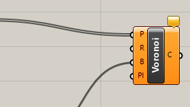Double click and type Voronoi. Voronoi is command which will help us to generate different patterns on surface.
It works on beautiful mathematical concept in which set of local points have their effective area. this areas are represents points minimum distance compare to other points. click
here to know more.
STEP 4 : Open point mod

>> Right click on point mode
>> Select multiple point option
>> Select points which are generated on rhino
STEP 5 : Add Box 2pt tool

By adding BOX 2Pt tool you can insert point(non physical point - you cant select it with mouse). it wil help to give boundry to the voronoi pattern.
STEP 6 : Extrude the Box


extrude the box by extrude command in grasshopper.
Add Unit z mod and connect it with Direction point of extrude
You have to add number slider to Unit Z.
STEP 7 : Define boundary of Voronoi pattern

Connect box output with boundy junction of Voronoi mod
you can see voronoi diagram has one boundary now.
STEP 8 : OFFSET TOOL

OFFSET TOOL will help us to generate pattern.
see below
STEP 9 : Connect offset with voronoi

By connecting voronoi with the offset, you can see in image, it will generate paths in area.
STEP 10 : Parametric relations

By using the Number slider tool, i can change offset factor in real time.

you can manipulate the voronoi diagram by just changing points location.
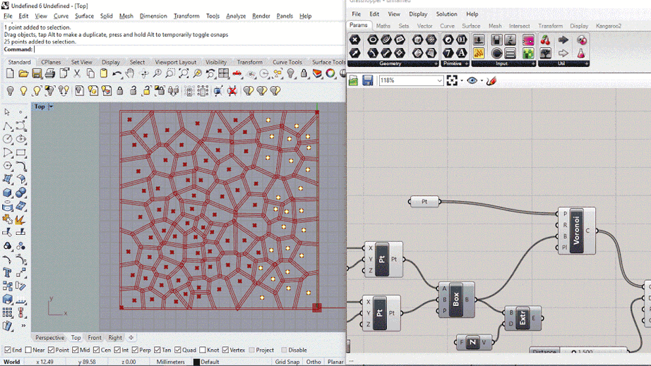you can move and rotate(with respect to reference point) multiple points and select pattern whichever you like
STEP 11 : Add extrude comand
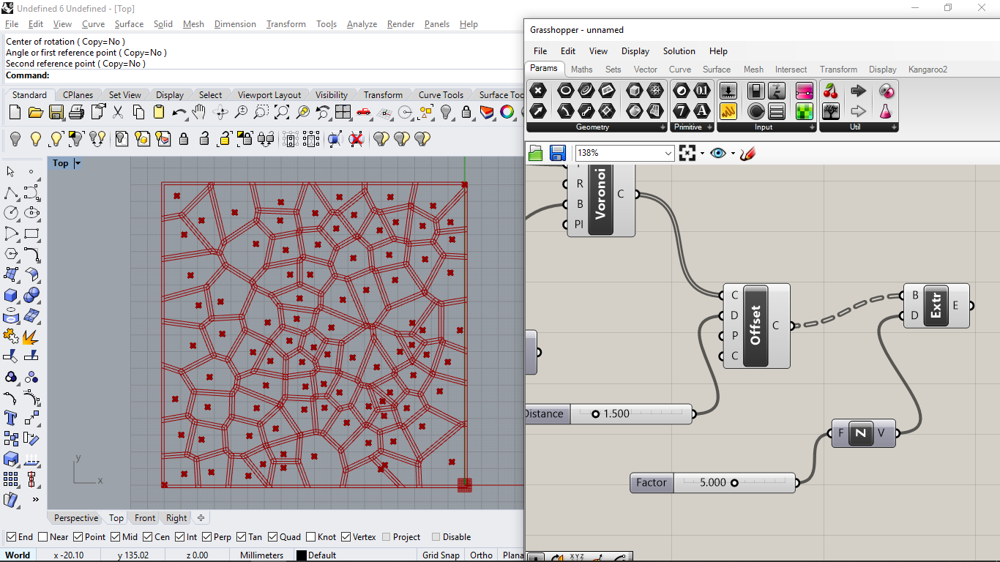Add extrude comand to the output of offset.

These are the intersections of offset, for better pattern it should be eliminated.

You have to go to expression tab of Offset mod to give the variable "-x". it will remove the intersection between the offsets and make them close.
STEP 12 :

Right click to extrude and select flatten
you can see dotted wire cpmming in input. it shows multiple data input(Brep) . we have to convert it into single information. thats why we use flatten.
type cap holes in grasshopper which creates solids of enclosed regions.

then connect cap holes with Solid difference mod in B point, and then Extrude mod from step 11 to A points.
A = solid which is going tp subtract
B = solid witch will be use to subtract
STEP 13 : generate a rendom surface
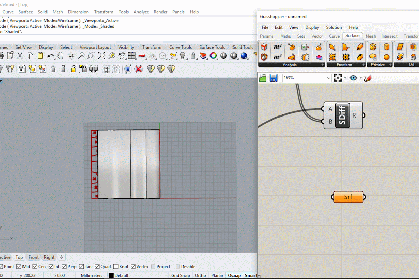Make a curve on Rhino with curve command.
and extrude it with extrudecrv command.STEP 14 : Surface morph

add surface morph tool, it will help us to aling the pattern to the surface
STEP 15 :
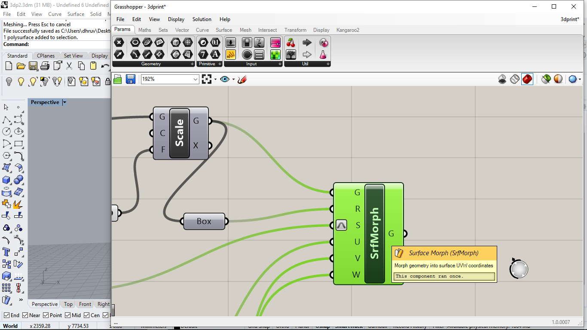 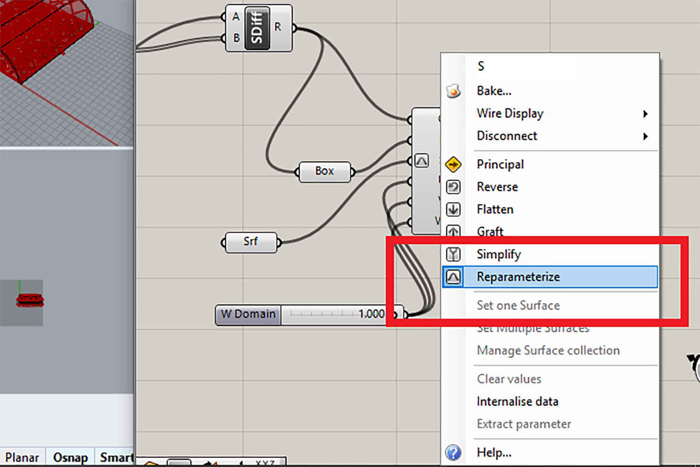
CONNECT :
SDiff to Geometry (G)
SDiff > BOX > REFERENCE (R)
RE-PARAMETERIZE the surface, it will convert whole surface into unit dimensions, means curves maximum dimension is 1 and minimum is 0.
Here longitudinal dimension is U parameter and transverse direction will be V.
W will be amount of thickness you want to give on pattern. you can change U, V, W by Number slider. For U and V keep maximum value 1. Otherwise pattern will go outside the surface and it wont be pattern.

It is how it looks in END.
STEP 16 : Exporting model as STL

.STL is used for FDM type of printers. in which 3d model is converted into layers and mesh which are used by slicer tool.
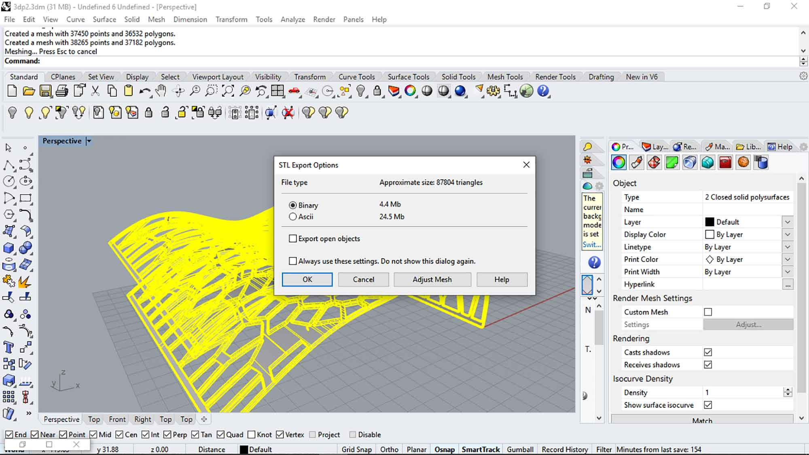There are two options for Export in .stl
Binary and ASCII , in binary you cant modified the 3d geometry after generating into .stl in ASCII you can do modification and it is human readable
Slicer softwere : cura
STEP 16 : Imported model in CURA
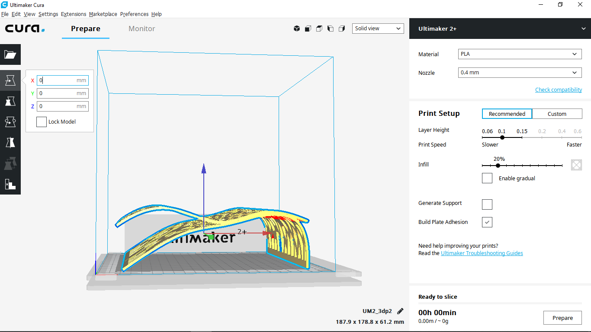It is first time i was going to use any 3D slicer softwere. we have two 3d printers Ultimaker 2+ and Flashforge Dreamer. i chose to use Ultimaker first.
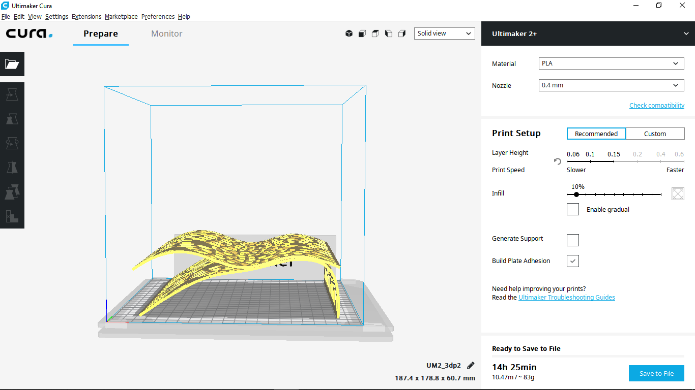On default settings and size print time was way too long, as expected
i do some changes to minimize it. i want to understand th settings so i started reading about cura's user manual. Click here to Read
I was successful to reduce the time to 4 : 00, but at a cost of quality and strength.
To reduce the time i changes following settings
Material : PLA
Scale-down the model to 50 %
tried different Orientation
Profile : Determines Quality
Normal = 0.15 mm
Quality :
Layer height : 0.2mm : more layer hieght less 3d print time and less quality
Infill :
Infill density : 10% : Infill stands for cavity area inside the walls
Lower the infill lower the printing time weaker the job
Speed :
outer wall speed : 60 mm/s : Print speed of outer walls
Inner wall speed : 60 mm/s : print speed of inner walls
TOp-bottom speed : 50 mm/s : Top-bottom wall speed
support speed : 55 mm/s
Travel speed : 200 mm/s
Higher the speed lower the time and bed printing quality
Enabled Acceleration. : It will accelerate the nozzle while travelling , reduces the time and effects retraction
Retraction : Retraction is ability of nozzle to retract or suck the material in when printing is not
needed.
Enabled Jerk control : Controls the jerk
Support :
Support placement : Everywhere : Supports overhangs
Support pattern : Grid : Depends on printing model
Support density : 12 : how much area it will cover
Build plate adhesion :
Build plate adhesion : Raft : for giving support at Build plat, to make the model attached to Build plate
Ultimaker
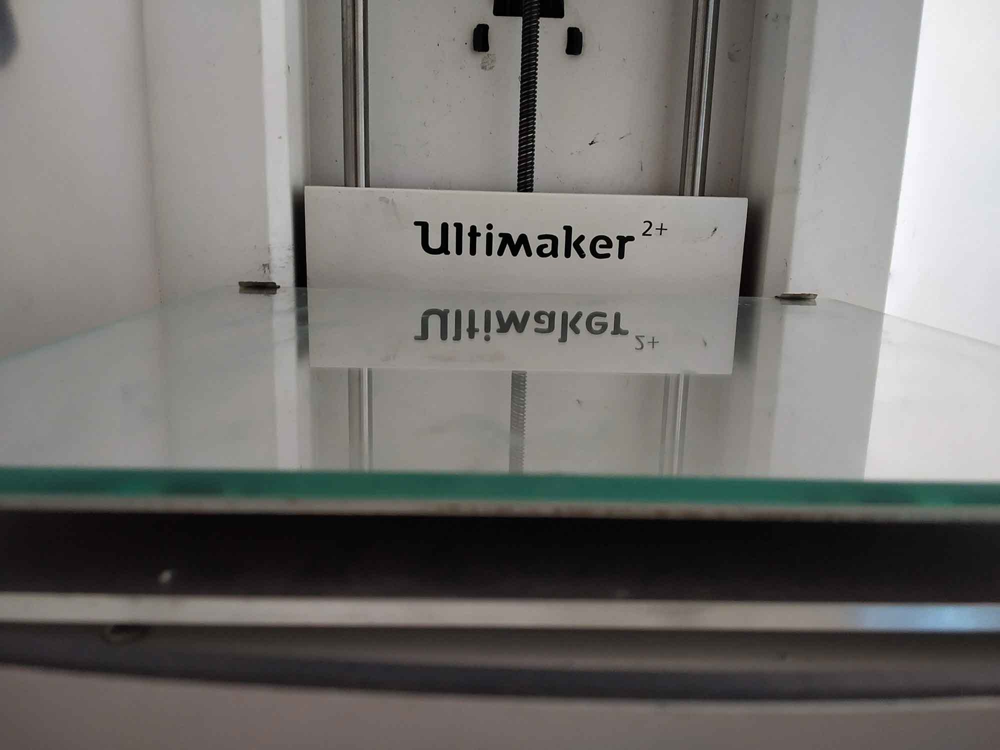STEP 17 : STARTED PRINTING
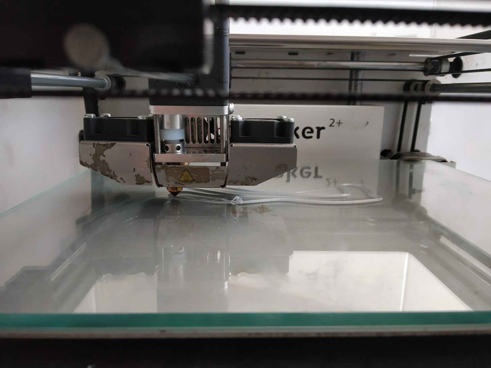STEP 18 : FINAL OUTUT
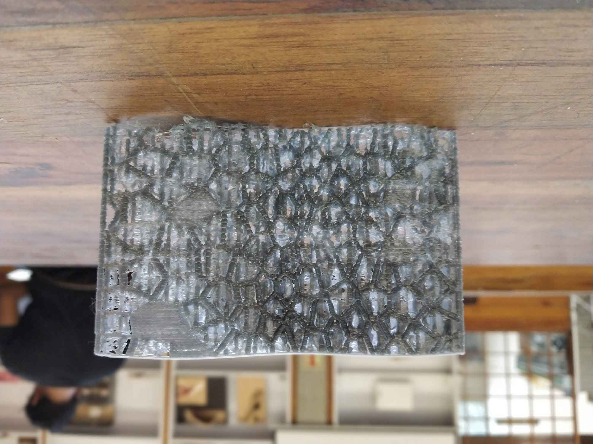It came out good but not the way i expected. Since i have to reduced the time and doing it first time(properly) i mad the structure weaker and Adding more, 3d printer stopped material drawing 90 % of job , so i have to take out uncompleted print
STEP 19 : BREAKING APART SUPPORTS
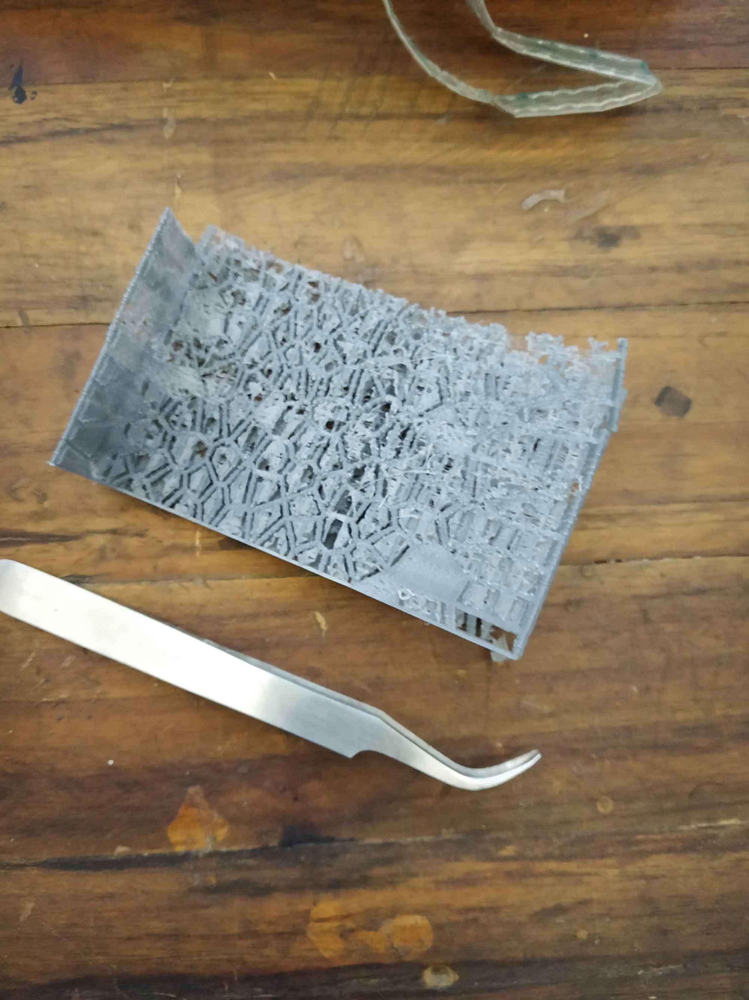 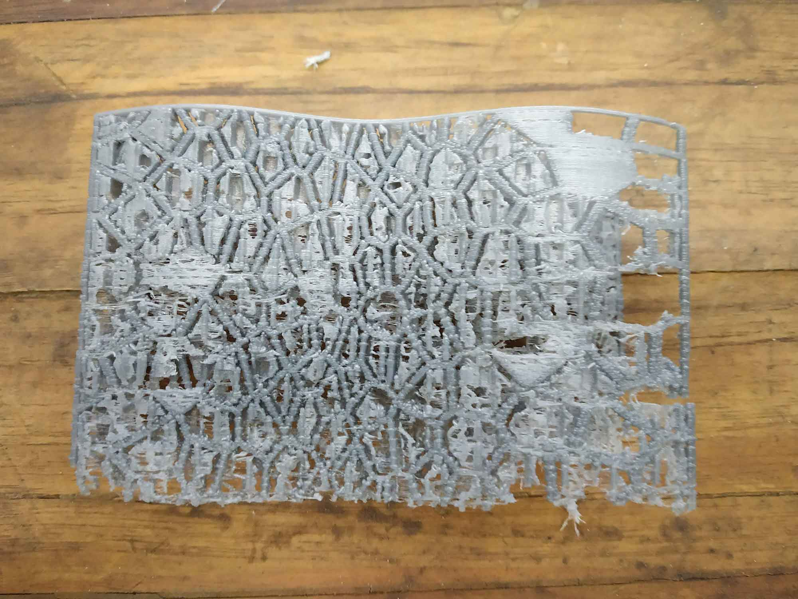AND I BREAK IT ! :/
conclusion :
I try to find which mistakes i have done in settings parameters :
- Layer height - can be low for this types of thin designs
- Infill - it is important factor, i put infill 15% (only 15% of inside will be poured with material), it is not appropriate for this thin complex bodies.
- Orientation of the design - the way i put my design it took more time to print
- Speed - i kept Print speed high. it Decreases the quality and thats why surface was ruff.
- Wall thickness - I Wall thickness low which should be more to better overlaps of design
- Supports - I put wrong types of supports in my designs , i found out when i removing it , Grid supports are not so good for these types of designs ( Complex voronoi). line supports are preferable
- Supports location - Where i put support is more important, if i put supports on body itself it will stress body itself and try to break it if body is thin.
Second Time :
I change some settings and tried one more time. changed settings are shown in red I also learned some basic , "Always give your model first priority, think about its strength and quality first. after setting up required value find ways to reduce time"
Material : PLA
Scale-down the model to 50 %
tried different Orientation
Profile :
Normal = 0.15 mm
Quality :
Layer height : 0.15 mm
Infill : I increase the infil to give the strength
Infill density : 80%
Speed : I lower the speed to increase the quality and strength
print speed : 50 mm/s
outer wall speed : 60 mm/s
Inner wall speed : 42 mm/s
TOp-bottom speed : 50 mm/s
support speed : 55 mm/s
Travel speed : 80m mm/s
Acceleration : Disabled
Enabled Jerk control
Support : i change the support type to lines for better removal
Support placement : Touching build plate>
Support pattern : Lines
Support density : 15 %
Build plate adhesion : i change from raft to brim because it takes lower printing time and still good bed support
Build plate adhesion : Brim
Brim width : 6 mm : its a width between initial layer and outermost brim count
STEP 20 : Second file

I change the orientation and settings , hopefully time was the same
STEP 21 : Ultimaker
 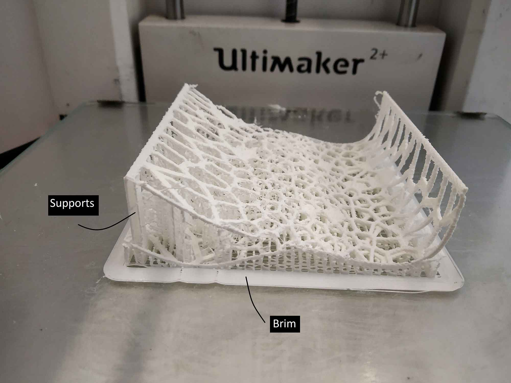
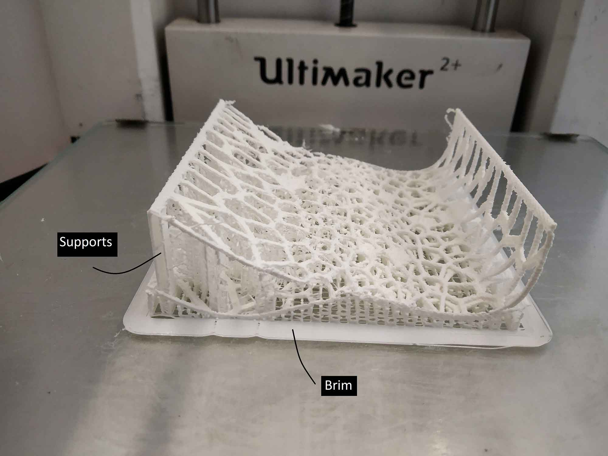
Here are the supports and the brim
STEP 22 : Final Output
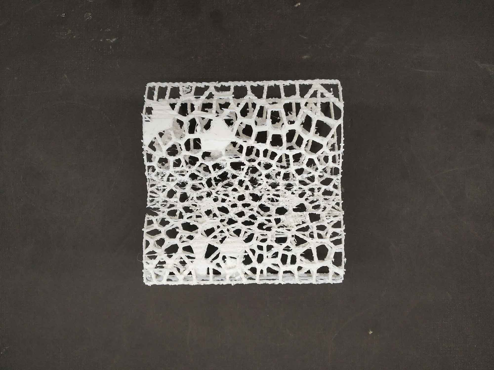

This designed is not complete yet , i am going to do some iterations for now, experiment with design and come with Final OUTPUT in Ultimaker. since i found printer also need some maintanance i moved to our second printer flashforge
Flashforge
i was also printing my model with flashforge, so i can have design limitation of both the printers, in flashforge i can go upto overhangs of 70 degrees. i came to this conclusion by doing some limitation test on the flashforge as part of our group work. below are some pictures of overhang limitation test it prints fine upto 70 degree and i think it can go straight to 80-85 degree
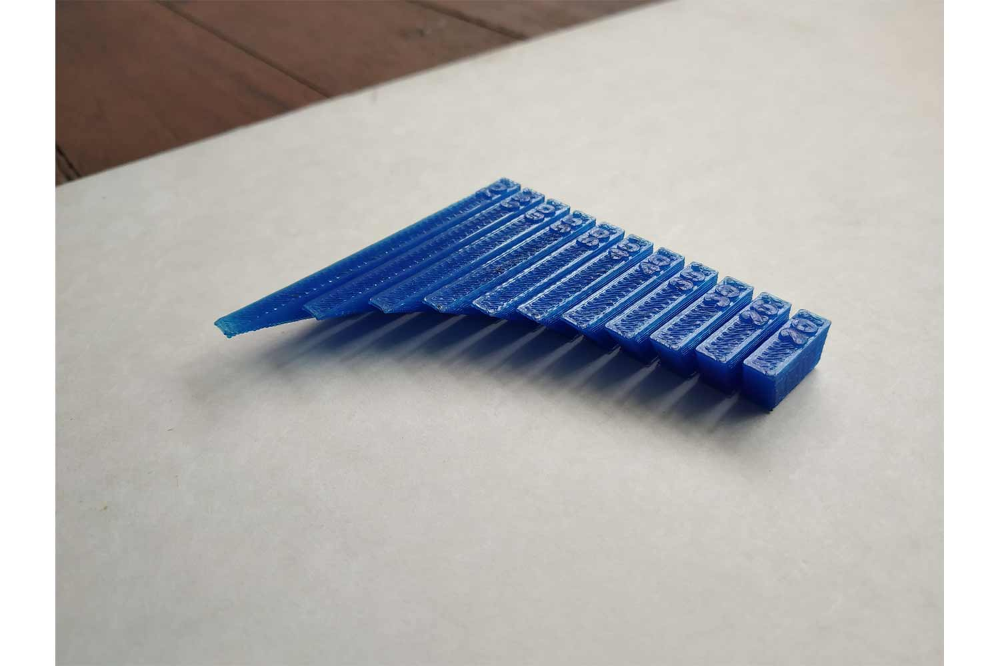 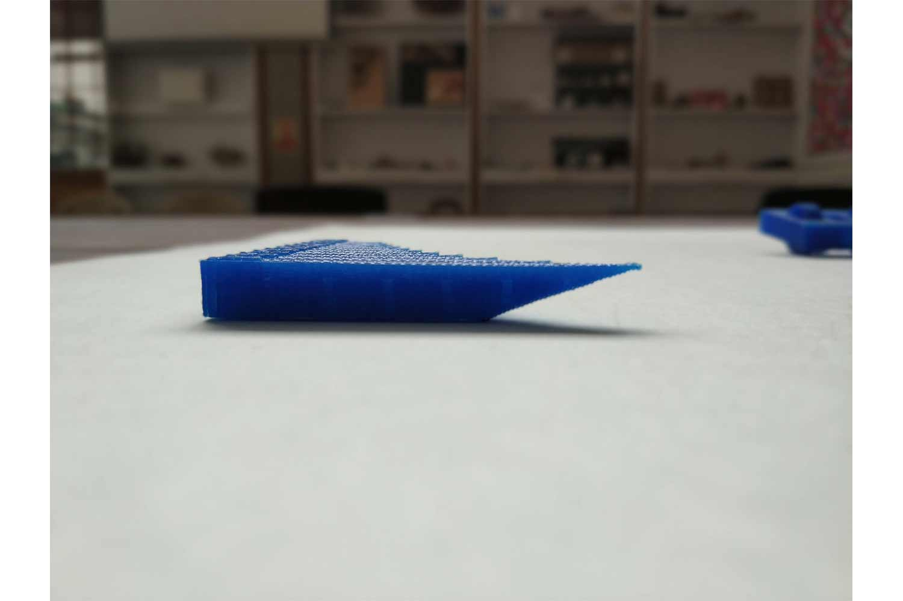But i didn't want to make so easy for flashforge to print my model, so i decided to print model without supports. I took one sample of my design and tried different Orientation, Speed, Temperature to make perfect G-codes for design. i was using flashprint softwere for generating .gx file.
STEP 23 : first orientation
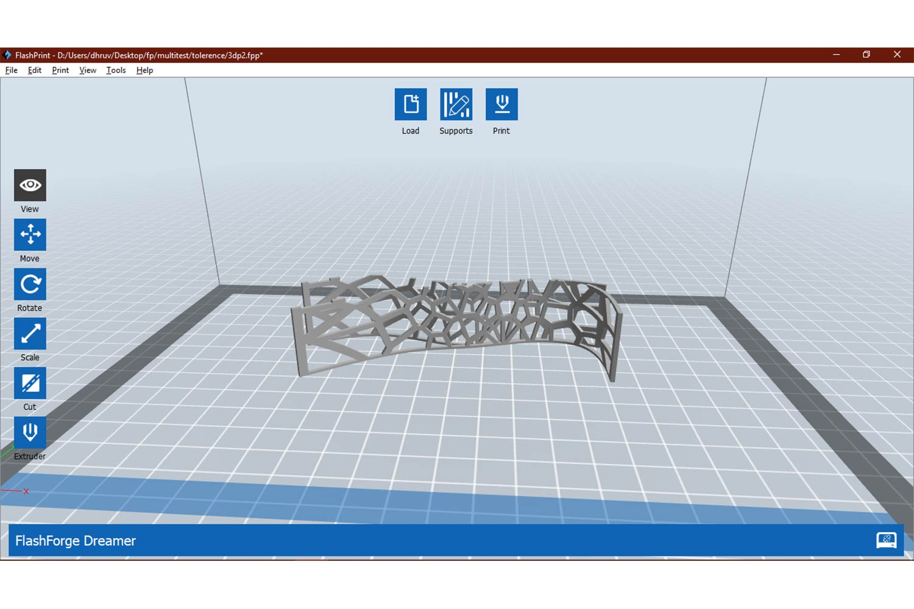i was quite sure most of overhang will work fine, but Want to know which part remains week comparatively, so i can give manual supports there.
STEP 24 : in flashforge

STEP 25 : Output

Results are really good and i was sure i can print this model in this orientation without supports, only Critic side is that end overhang which can be managed on post processing.
STEP 26 : Different orientation
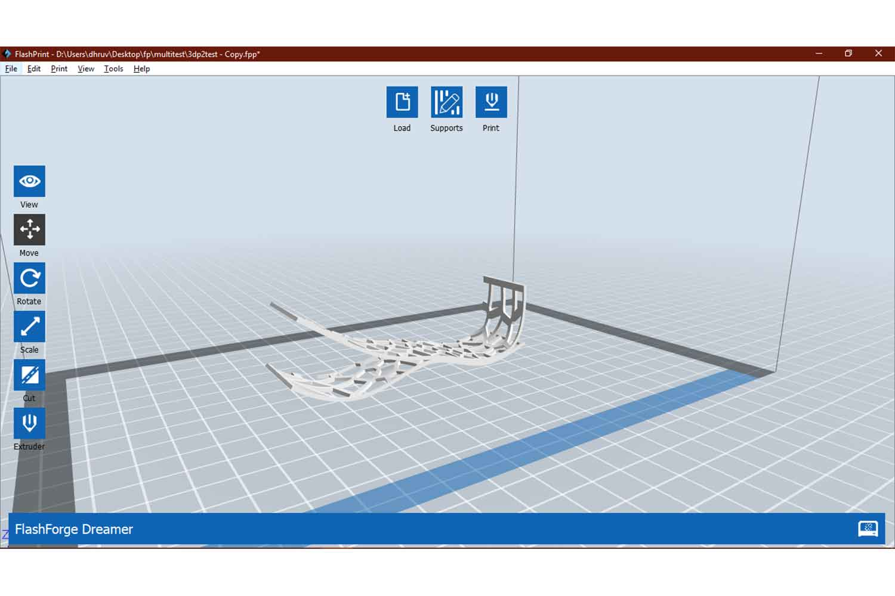
i tried with different orientation this time, time was 30 minutes less, but there was a problem , Raft was not sticking to print bed, so increased the bed temperature( up to 60 degree) and nozzle temperature( up to 210 degree) also.
Very strong Raft
one thing i dont like in print is very strong raft. yes ! raft or brim is necessary in support of model, but this was a headache, it bonds so strong with my model that it tear of my very first layer of it, to resolve it i opened expert mode in preference and change Z offset to 0.4 mm . Hope it help.
STEP 27 : Output
I think increasing temperature was mistake. Due to that i found retraction problems on output material was not solidifying as quickly as it should be. in bridge side material got separated little bit, it supposed to be clean as per overhang test (Reason can be Low print area and Temperature factor. i have to try second time with low speed and suggested temperature. this orientation reduces 39 minutes of my sample , so it will definitely banefit me in full model
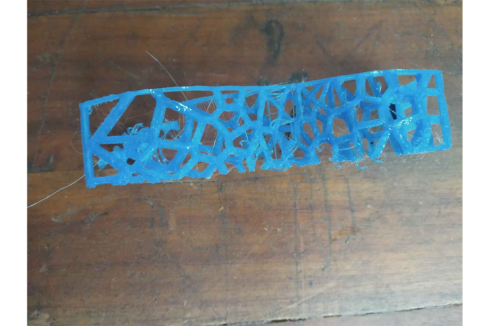none of above parameteer help me here. i had same retraction issues there, so i went for the first orientation.
final 3d print model
After Knowing my first orientation will be good for my final design , i went for full scale model. on full scale model since i know which will be critical positions for supports i went for the Manual supports in model.
I gave the supports two sides, At the curves and at long bridges at the corner.
At corners

At bridges
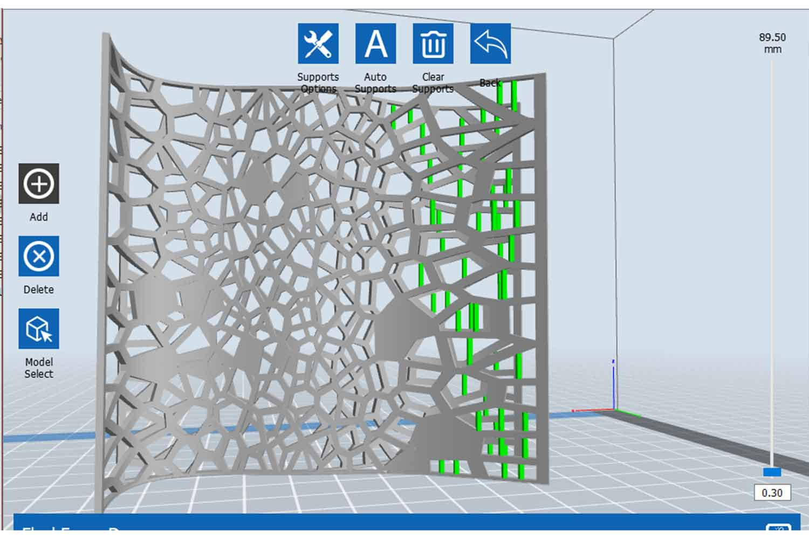Printing
Final Images
I Love this picture. I never though without suports it will be possible. all credits goes to printer.


scanning
what is 3D scanning ?
3D Laser Scanning is a non-contact, non-destructive technology that digitally captures the shape of physical objects using a line of laser light. 3D laser scanners create “point clouds” of data from the surface of an object. In other words, 3D laser scanning is a way to capture a physical object’s exact size and shape into the computer world as a digital 3-dimensional representation.Types of 3d scanning
Photogrammetry
Stemming from photography, photogrammetry is an incredibly useful technology in various fields. The technology takes multiple images, taken at different positions, and triangulates points in these images to figure out the location of them in a three-dimensional space. For example, land surveyors utilize this technology when making maps. When dealing with inaccessible places, such as mountains, the surveyors are able to use photogrammetry to perform their measurements. Many modern technologies use photogrammetry, the major determiner in precision relies on the caliber of the images. If images are poor, there will be holes in the mesh. The more images that you can produce, the greater the accuracy of your scan will be.Structured Light
The technology here is created by casting geometric patterns onto an object while simultaneously taking images with a camera. When doing so, the camera logs the deviation of the image. Based on this displacement of the pattern, locations of all existing points are able to be determined. Numerous scans have to be conducted from different positions and then combined until the mesh can be 100% complete. Computer programs automatically combine all of the scans to form this complete mesh. The results formed using structured light 3D scanners are extremely precise, and the technology is available in both portable and stationary scanners.Time of Flight (TOF)
Slightly more scientifically oriented are Time of Flight (TOF) 3D scanners. These scanners measure how long it takes for a laser or infrared beam to be reflected back to the scanner, with the main component in the scanner being speed of light. Although the scanners contain highly accurate sensors, the precision of these devices is relatively low, ranging in centimeters. This is primarily a result of how the speed of light is affected by various factors, such as temperature and humidity. Hence the technology is primarily used in measuring large items like buildings. The technology requires multiple scans to be conducted in order to form a complete mesh, just as with other 3D scanning technologies. The majority of devices using Time of Flight can be found in portable scanners.Laser Scanning (Triangulation)
Perhaps the most accurate 3D scanning technology is that of laser scanning, also known to as triangulation. Similar to structured light and photogrammetry scanners, laser scanning uses the same base principle of geometry to find a point’s location in space. By casting a laser beam upon the object being scanned, a camera is able to record where the beam and object intersect. Knowing both the angles of the laser beam and camera makes it possible to know the precise location of the laser dot that is hitting the object. The accuracy of laser scanners is exceptional, ranging in mere micrometers. The only downside to the scanners is the fact that they can only range in just a few meters and the technology is typically not found in portable scanning devices.Contact
With a self-describing name, contact printers physically touch a resting object. The scanning process can be fairly timing, and the process is very sensitive to movements and vibrations during scanning. Contact scanners are primarily used in quality control due to the potential alterations that they cause to objects being scanned. The technology is not used in conservation of objects as a result of this.This content is from 3D Scanning services website.
Start with kinect
I started with kinect to scan the 3D objects and convert it into Cad Design. I Downloaded kinect sdk 1.8.

Skanet softwere
STEP 1 : Scanning with Skanet Softwere
Scanning with Skanet softwere , by using the kinect we have to Rotate the object. i chose Body because i was going to scan a my friends body

STEP 2 : Rotating object
In this image Green area shows the area which are scanned and red dots shows parts which are remained to cover.

STEP 3 : Reconstruct
Reconstruct will help you to regenerate the surface by scanning recorded video.
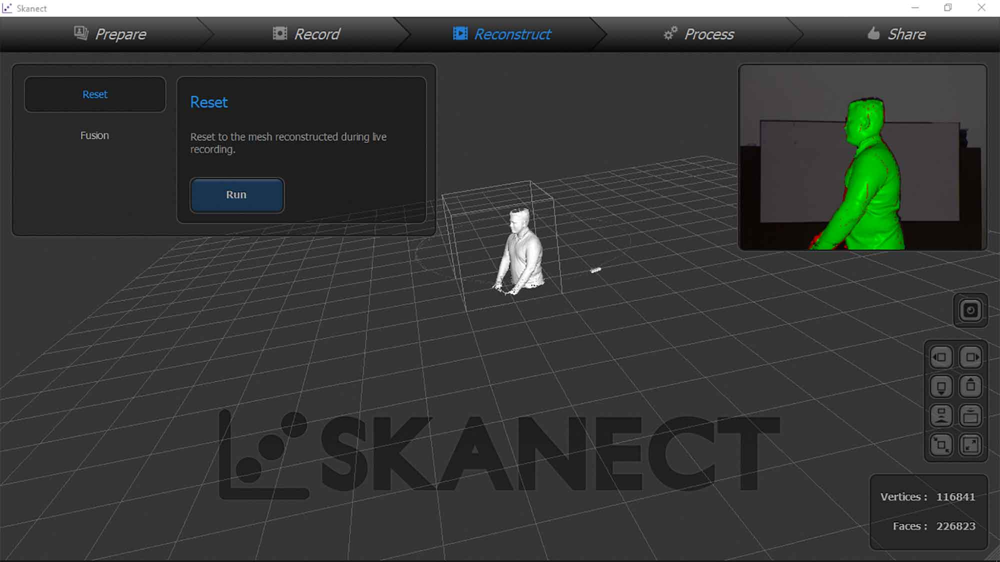STEP 4 : Post-processing
Post processing : Clearing the holes, Colorizing the model and making model watertight.
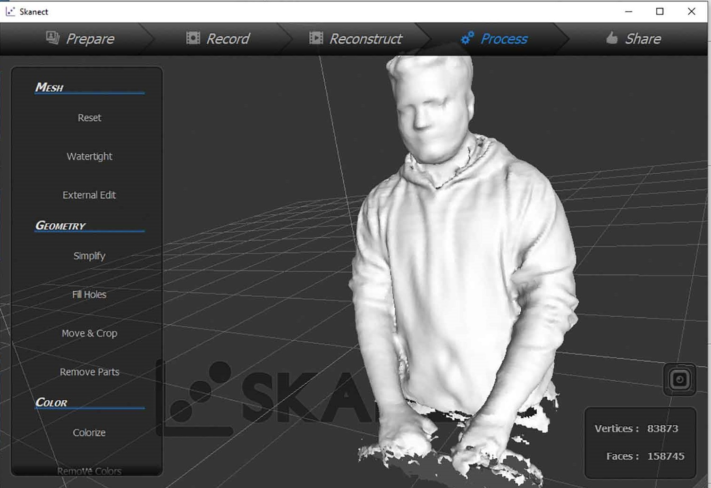STEP 5 : Final

our watchman uncle ready to get scanned
Group work
The assignment was to test the design rules for our 3d Printer. The printer that the lab owns is an Ultimaker 2+. There are different kinds of test that are done to check the ability of the printer before it fails. Each on of us took up different tests and I was assigned the overhang test. i test angles to 20 degree to 70 degrees on flashforge and found out < it is reallygood in maters of overhang , you can see above in my design i went upto the 85 90 degree without any supports and i can go straight to 0 or 180 degree for average 15 cm distance. These are my observations. below are some images of overhang and other test which described on website.
click here to visit group website.
Overhang test

Other tests
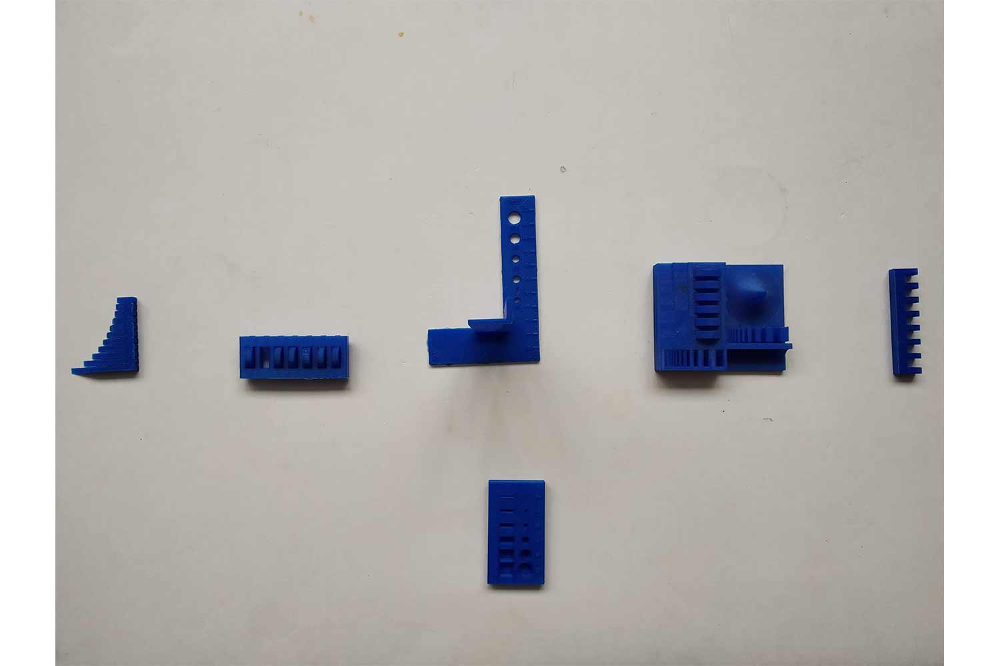Conclusion
This week was very exciting and one of my favourite week, i always wanted to work with 3d printer and 3d scanning was kind of bonus. thought i took some big steps in excitement i wanted to make something that is not so common is making or some patterns that can check how far 3d printer goes, i start by Voronoi designs and then realized it was too much (For ultimaker specially) , i learn to 3d print in parts or have some test print first, it helps to Decide settings for 3d printing and by that we can have different experience of parameters. 3d scanning was also very cool , it is cutting of technology we can also make something by only scanning it is some futuristic idea.